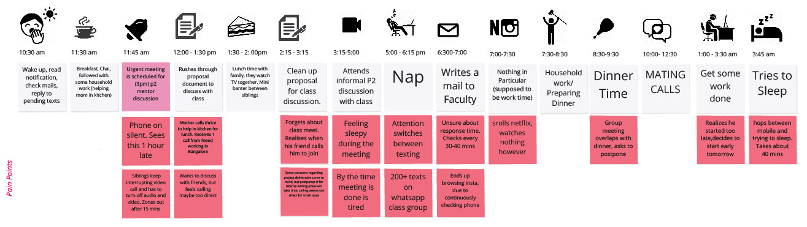

Introduction
Odeto is a framework that lets students and professors mutually co-create a set of Protocols, Guidelines and Best Practices for their online design classes. It enables co-creation of a set of protocols, guidelines and best practices to make the experience of online design education convenient for students and faculty both. This would be done keeping in mind the various touchpoints we encounter in design education including assignments, project work, coordination and presentation.”
Motivation
- There is an absence of online Codes of Conduct, as compared to offline modes of education where ground rules have already been established.
- There is a need for immediate intervention as online design education has already begun.
- Absence of physical cues can hinder organic development of conduct, thereby making online education less effective. Our primary motivation is to design a tool that can establish “rules” for online classes.
Design Process
Primary Research
Some of the findings from the primary research were
- The online tools (such as Zoom, Microsoft Teams) for different activities like conducting classes and submission of assignments, were defined by the institute and the professors.
- Little to no feedback was taken from the students while organizing the class schedule.
- A lot of time and energy was spent trying out different online platforms.
- The time required to do a particular activity online, such as conducting a test, was almost twice as much as the time it would require to be physically done.
- Virtual fatigue was also a complaint.
- By simply mimicking the campus life online, balancing real life with online education became extremely taxing, as gender inequalities at home and inadequate spaces for studying added stress to students. From this, we felt that a defined formal and informal code of conduct would be helpful.
- Just like classes have Class Representatives, we felt that newer roles like taking notes during an online meeting, recording video lectures and a mental health representative could also be introduced.
Data Collection
We started by creating a user persona and user journey based on the interviews we had conducted to identify areas of interventions.
Next, we created a mind map where we listed and grouped the different aspects of online learning. We identified subtopics in a hierarchical structure. Some of the problems with online education became more evident as this project was entirely done online, with all the members being in differentcities.

We prioritised topics based on their importance and created a structure with five topics in focus. Lastly, we ideated scenarios for the different sub-branches of the mind map. We grouped them as Protocols, Guidelines and Best Practices, depending on the nature of the scenario.
Implementation
We considered different mediums for the execution of the project such as flashcards, posters, wiki, website, Google Sheet etc. We finally decided to go ahead with a Google Sheet. The platform of Google Sheets makes it easily accessible from all devices. Since we are accustomed to Spreadsheet applications, Google Sheets does not have a steep learning curve. This would enable a wider group of people to try it out. It also makes it easy to download and available in a printable format for users who would prefer to have a hardcopy
Organization
- On opening Odeto, the professor has to provide the Basic Information related to the course. This includes details such as the Course Code, Instructor Name and the Course Timetable Next, there is a small description on how to use Odeto.
- Once the preliminary information is obtained, the users can move on to discuss and decide the Protocols, Guidelines and Best Practices in the co-creation session.